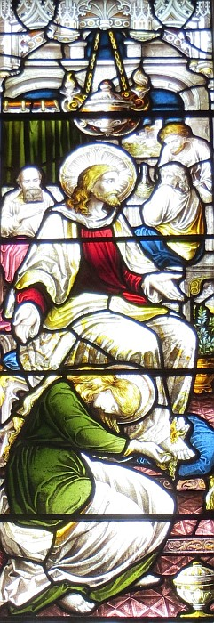

La Bouonne Nouvelle s'lon Luc, Chapitre 7
Vèrsets 1-10
Assa quand il avait ag'vé touos ses d'vis à l'êcout d'l'assembliée du peupl'ye, il entrit dans Capharnaüm. Lé sèrveux d'un cèrtain chent'nyi, tchi l'aimait hardi, 'tait malade et sus l'pus. Quand i' ouït pâler d'Jésû, il li'env'yit l's anciens des Juis à seule fîn dé l'talbâter pouor qu'i' vînsse èrdgéthi san sèrveux. Quand i' vîndrent à Jésû, i' l'talbâtîdrent dé siette et lî dîdrent, "Il est dîngne, lé chein pouor tchi qu'tu'accordétha d'même. Ch'est en tchi il aime not' nâtion, et i' nos a fait bâti eune sŷnnagogue."
Jésû s'en fut acanté ieux, mais coumme i' s'appréchait d'la maîson, lé chent'nyi li'env'yit tcheûrre d's anmîns pouor lî dithe, "Seigneu, né t'embâte pon! Jé n'sis pon dîngne qué tu'entre souos man lief. V'là tch'est pouortchi jé n'vîns pon à té, viyant qué j'n'en sis pon dîngne, mé. Di raîque eune pathole, et man sèrveux s'sa r'dgéthi. Mé, j'sis un houmme tch'est accouôteunmé à la c'mande, et j'ai des soudards souos ma c'mande: si j'dis à l'iun, "Va!" - il îtha; si j'dis à l'aut', "Vé-t-en!" - i' veindra; et si j'dis à man sèrveux, "Fai chenna!" - i' lé f'tha."
Quand Jésû ouït chennechîn, i' fut ravi, et s'èrtouônnit et dit ès cheins tchi l'siéthaient, "J'vos dis qu'j'n'ai pon trouvé eune itelle fouai, véthe, et chenna partout Israël." Et les cheins tch'avaient 'té env'yés lus en r'fûdrent à la maîson et y r'trouvîdrent lé sèrveux tch'avait 'té malade entchiéthement r'dgéthi.
Vèrsets 11-17
Et i' s'adonnit qu'auprès eune pause i' s'en fut à eune ville tch'avait nom Nain, et ses discipl'yes lus en fûdrent acanté li et un fièr fliotchet d'monde étout. Quand i' s'appréchit d'l'entrée d'la ville, nou 'tait à emporter un mort, l'seul fis d'sa méthe, tchi 'tait veuve, et acanté chette-chîn y'avait un fièr fliotchet d'villais. Quand l'Seigneu la vit, il en eut pitchi et lî dit, "N'sai pon triste!" Et i' s'appréchit et touchit l'côffre et les porteurs lus arrouîdrent. Et i' dit, "Janne houmme, j'té dis: Lève-té!"
Et l'mort sé l'vit et s'êcantit à pâler. Et i' l'baillit à sa méthe. Et touos ieux i' fûdrent êffrités, épis i' louangîdrent lé Bouan Dgieu et dîdrent, "Un grand prophète est parmi nous!" et "L'Bouan Dgieu a fait du bein a san peupl'ye." Et ch't' histouaithe entouor li fut contepétée partout la Judée et l's envithons.
Vèrsets 18-35
Jean ouït entouor tout chennechîn d'ses approtis, et il en envyit deux au Seigneu à seule fîn dé d'mander, "Ch'est-i' qu'tu'es l'chein tch'est pouor v'nîn, ou j'sommes-t-i' pouor espéther un aut'?" Et quand i' vînt à Jésû i' dîdrent, "Jean l'Laveux nos a envyé à té pouor d'mander chennechîn: Ch'est-i' qu'tu'es l'chein tch'est pouor v'nîn, ou j'sommes-t-i' pouor espéther un aut'?"
Et à chu temps-là i' r'dgéthit un tas d'monde d'lus maux. Il en cachit des mauvais esprits et r'baillit la veue à d's aveugl'yes. I' rêponnit ès approtis d'Jean, "R'allez don rapporter à Jean chein qu'ous avez veu et chein qu'ous avez ouï: les aveugl'yes èrvaient, les hampions r'marchent, les lêpreurs sont r'dgéthis, les ouait-gouttes èrouaient, les morts èrvivent, et les pouôrres gens ont r'chu la bouonne nouvelle. Beinheutheux s'sa l'chein tchi n'a pon d'doutanches dé mé!"
Un co qu'les hoummes envyés par Jean èrfûdrent hors, i' s'êcanchit àprêchi au monde entouor Jean: "Pouor tchi vaie qu'ou vos en fûdres au d'sèrt? Ch'tait-i' pouor vaie des ros à craûler au vent? Sénon pouor tchi vaie qu'ou vos en fûdres? Un houmme tout attînfé d'falbalas? Ch'est en tchi nou trouve les attînfés et les mangeurs d'fricots dans les palais ès rouais. Pouor tchi vaie don qu'ou vos en fûdres? Un prophète? Véthe, j'vos l'dis: bein pus qu'un prophète. Ch'est ch'tî-chîn entouor tchi l's Êcrituthes ont raconté: 'Viy'-ous, j'envyêthai man sèrveux l'avant à vous, à graie lé c'mîn l'avant à vous'. J'vos dis, n'y'a fis d'houmme né d'femme pus grand qu'Jean, tout coumme lé chein tch'est l'drein du rouoyaume du Bouôn Dgieu est pus grand qu'li."
Et tout l'monde et chenna auve les tcheûteurs dé taxe tch'avaient r'chu la lav'thie d'Jean, ayant ouï chennechîn, louangîdrent lé Bouôn Dgieu. Mais les Pharisiens et les maît's d'la Louai avaient eune hyie contre lé propos du Bouôn Dgieu, ch'est en tchi i' n'avaient pon r'chu la lav'thie d'Jean.
Jésû lus dit, "Coumme tchi qu'i' sont, à m'n avis, les gens d'achteu? À tchi qu'i' r'sembl'yent? I' sont coumme des mousses assis dans l'marchi à lus entré-braithe: 'J'avons joué la fliûte pouor vous tout coumme ou n'dans'sêtes pon. J'avons chanté des lamentâtions tout coumme ou n'plieuth'thêtes pon.' Ch'est en tchi Jean l'Laveux n'tait pon pouor mangi du pain ni pouor baithe du vîn quand i' vînt et ou dîtes, 'V'là tch'il a un mauvais esprit.' Mais né v'chîn l'Fis d'l'houmme tch'est v'nu fricoter et ou dîtes, 'Tchi mâfreux, tchi goudalleux! Et v'là tch'il accouôthinne des tcheûteurs dé taxe et des pécheurs!' Mais quand nou fait chein tch'est bein, v'là tchi justifyie la sagesse des c'mandes du Bouôn Dgieu."
Vèrsets 36-50

Et iun des Pharisiens l'învitit à dînner siez li. Et i' s'en fut siez l'Pharisien et s'y'attablyit. Et y'avait eune femme dans la ville tchi 'tait eune péch'rêsse et quand ou ouït qu'i' 'tait un învité siez l'Pharisien ou prînt eune boêtée en albâtre d'onguent et y'entrit et vînt auprès d'ses pids en plieuthant dé sorte qué ses pids fûdrent lavés atout les lèrmes dé ses ièrs, et ou les s'tchit atout ses g'veux, et ou baîsit ses pids en l's onguennant. Assa quand l'Pharisien siez tchi qu'i' 'tait vit chenna, i' s'dit, "Ch't houmme, s'i' 'tait un prophète, li, saithait bein tchi manniéthe dé femme qu'oulle est tchi l'paûtrîngue dé même et qu'oulle est eune pécherêsse."
Et Jésû lî rêponnit, "Simon, j'dai t'dithe dé tchi."
Et i' lî dit, "Di-mé, Maît'."
Et i' dit, "Deux hoummes dévaient des sou à un marchand: l'iun avait eune dette dé chîn chents sous et l'aut' chînquante. Quand i' n'pouvaient pon r'payi lus dettes, i' r'nonchit les dettes à touos les deux. Létché dg'ieux don l'aimait l'mus?"
Simon rêponnit coumme chennechîn, "M'est avis l'chein tch'avait la pus grande dette." Et i' lî dit, "Véthe." Et i' s'èrtouônnit à la femme et dit à Simon, "Vai-tu chutte femme-chîn? J'sis v'nue siez té; tu n'm'a pon donné dé l'ieau pouor mes pids, mais ou m'a lavé les pids atout les lèrmes dé ses ièrs, et l's a s'tchi atout ses g'veux. Tu n'm'a pon offèrt un baîsi, mais d'pis qué j'entris oulle a 'té à m'baîsi les pids. Tu n'm'a pon onguenné la tête, mais ou m'a onguenné les pids. Et don j'té dis: oulle étha du pardon pouor des offenses dé tchi y'a un amas, viyant san grand amour, mais l'chein tchi n'a pon hardi d'bésouain d'pardon offre bein p'tit d'amour." Et i' lî dit, "Tes offenses sont pardonnées."
Et les cheins tchi 'taient attabliés auve li lus dîdrent, "Tchi qu'il est, ch'tî-chîn tchi pardonne les offenses dé même?"
Et i' dit à la femme, "Par ta fouai, tu'as l'salut, va en paix."
Viyiz étout:
- La Bibl'ye
- La Bouonne Nouvelle s'lon Saint Luc, chapitre iun, vèrsets 1-4
- La Bouonne Nouvelle s'lon Luc, Chapitre 1, vèrsets v-xxv
- L'Êvangile sélon Saint Luc, chapitre iun, vèrsets 26-38
- L'Êvangile sélon St.-Luc: chapitre 1 versêts xxvi à xxxviii - eune aut' vèrsion
- L'Êvangile sélon Saint Luc, chapitre iun, vèrsets 26-38 - eune aut' vèrsion
- La Bouonne Nouvelle s'lon Luc, Chapitre 1, vèrsets 39-56
- L'Êvangile sélon St.-Luc: chapitre 2 versêts i à vii
- L'Êvangile sélon St.-Luc, Chapitre deux, Vèrsets 1 à 7- eune aut' vèrsion
- L'Êvangile sélon Saint Luc, chapitre 2, vèrsets viii à xx
- L'Êvangile sélon St.-Luc, Chapitre deux, Vèrsets 8 à 20- eune aut' vèrsion
- L'Êvangile sélon St.-Luc: chapitre 2, versêts viii à xx - eune aut' vèrsion
- L'Êvangile sélon St.-Luc: Chapitre 2, Versêts 8 à 20 - eune aut' vèrsion
- La Bouonne Nouvelle s'lon Luc Chapitre 2, Vèrsets 21-24
- La Bouonne Nouvelle s'lon Luc, Chapitre 2, vèrsets 25-33
- La Bouonne Nouvelle s'lon Luc: 3
- La Bouonne Nouvelle s'lon Luc, Chapitre 3, vèrsets 23 à 38
- La Bouonne Nouvelle s'lon Luc: 4
- La Bouonne Nouvelle s'lon Luc, Chapitre 8
- La Bouonne Nouvelle s'lon Luc: 9
- La Bouonne Nouvelle s'lon Luc: 10
- Lé Bouôn Samathitain
- La Bouonne Nouvelle s'lon Luc: 12
- La Bouonne Nouvelle s'lon Luc: 13
- Luc: 14
- La Bouonne Nouvelle s'lon Luc, 15 iii-vi
- La Bouonne Nouvelle s'lon Luc, Chapitre 15, vèrsets viii-x
- L'Êfant Prodigue
- La Bouonne Nouvelle s'lon Luc: 17
- La Bouonne Nouvelle s'lon Luc: 18
- La Bouonne Nouvelle s'lon Luc, Chapitre 19
- La Bouonne Nouvelle s'lon Luc, chapitre 19, vêrsets 1-10
- L'Êvangile sélon Saint Luc, chapitre 19, vèrsets 42-44
- La Bouonne Nouvelle s'lon Luc: 20
- La Bouonne Nouvelle s'lon Luc, Chapitre 20, vèrsets 20-26
- La Bouonne Nouvelle s'lon Luc, Chapitre 21
- La Bouonne Nouvelle s'lon Luc: 22
- La Bouonne Nouvelle s'lon Luc, Chapitre 23
- La Bouonne Nouvelle s'lon Luc, Chapitre 24
- La Bouonne Nouvelle s'lon Saint Luc, chapitre 24, vèrsets 36-43
{kind=link}